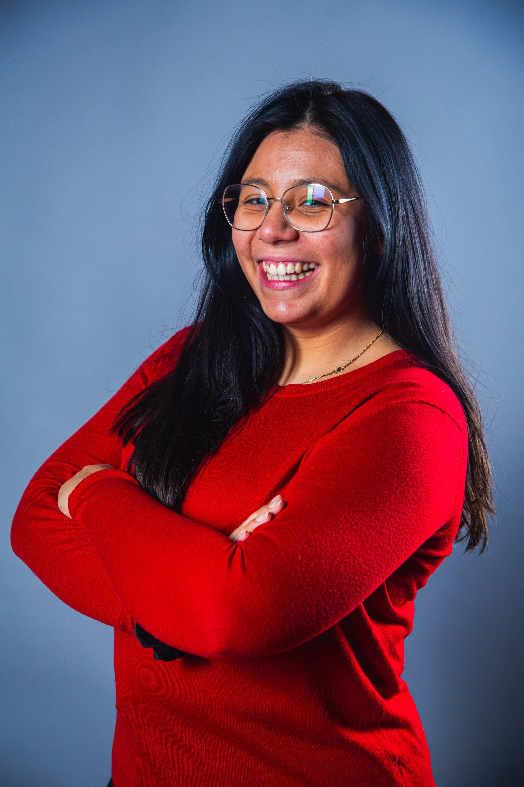

We Like
to Judge.
Ein Workshop zur Förderung der Medienkritik und Sensibilisierung von Künstlicher Intelligenz für Schülerinnen und Schüler der Sekundarstufe I.
Eingereicht: 24.07.2026 · Verteidigt: 24.08.2026
Künstliche Intelligenz ist fester Bestandteil der Lebenswelt Jugendlicher. Anwendungen wie ChatGPT, KI-gestützte Suchsysteme oder KI-generierte Inhalte auf Social Media werden regelmässig genutzt. Gleichzeitig erschweren Deepfakes und synthetische Medien zunehmend die Unterscheidung zwischen authentischen und künstlich erzeugten Inhalten. Dadurch gewinnt die Fähigkeit zur kritischen Medienbewertung an Bedeutung.
Der Workshop „We Like to Judge“ wurde im Rahmen dieser Arbeit entwickelt, um Schülerinnen und Schüler für Chancen und Risiken von KI zu sensibilisieren und ihre Medienkritik zu fördern. Die Zielgruppe sind Schülerinnen und Schüler der Sekundarstufe I (ca. 13–17 Jahre) in der Deutschschweiz. Das Konzept ist flexibel angelegt und kann an unterschiedliche Leistungsniveaus angepasst werden.
Was Teilnehmende mitnehmen.
Die Teilnehmende können in eigenen Worten erklären, was Künstliche Intelligenz ist und wie KI-Anwendungen im Alltag genutzt werden.
Die Teilnehmenden können typische Merkmale von KI-generierten Bildern und Videos benennen sowie digitale Inhalte kritisch prüfen und einschätzen, ob ein Beitrag authentisch oder manipuliert ist.
Die Teilnehmenden können drei zentrale Begriffe der Medienkritik nennen und deren Bedeutung für den Umgang mit digitalen Informationen erläutern.
Ergebnisse des Workshops
Die Rückmeldungen bestätigen, dass der Workshop besonders verständlich, motivierend und weiterempfehlenswert erlebt wurde. Die folgenden Kennzahlen machen diese Wirkung sichtbar.
Die Teilnehmenden bewerteten den Workshop insgesamt sehr positiv.
Inhalte wurden als klar und nachvollziehbar wahrgenommen.
Produktionsorientierte Aufgaben und Kahoot wurden als besonders motivierend erlebt.
Hohe Weiterempfehlungsbereitschaft unter allen befragten 70 Teilnehmenden.
Schulklassen der Sekundarstufe I, an denen der Workshop durchgeführt und laufend optimiert wurde.
Vier Phasen. Fünf Lektionen.
Pre-Umfrage zu Vorwissen und KI-Nutzung. Kahoot-Quiz zur spielerischen Aktivierung und ersten Auseinandersetzung mit authentischen vs. KI-generierten Inhalten.
Zwei Inputs: Medienkritik im Alltag sowie Einführung in generative KI und Deepfakes mit konkreten Beispielanalysen und Hinweisen zum verantwortungsvollen Umgang.
In Gruppen entwickeln die Teilnehmenden ein Medienprodukt (Reel, Podcast oder Grafik). Dabei vergleichen sie die Erstellung mit und ohne KI-Unterstützung. Die Themen stammen aus den Bereichen Influencer, Social Media oder Gaming.
Präsentation der Gruppenprodukte, strukturierte Reflexion anhand von Leitfragen, Post-Umfrage und abschliessendes Kahoot zur Lernkontrolle.
Produktarten
Die Gruppen wählen eine Produktform. Sie erstellen je eine Version ohne KI und eine mit KI-Unterstützung, um einen direkten, erfahrungsbasierten Vergleich.
KI-Tools im Einsatz
Während des Workshop wird mit diesen KI-Plattformen gearbeitet.
Materialien für jede Gruppe
Jede Gruppe erhält strukturierte Unterstützung für selbstständiges Arbeiten.
Was Lehrpersonen und Lernende sagen.
Ich habe den Workshop insgesamt als interessant, relevant, realitätsnah und strukturiert erlebt. Die Gruppenarbeit fand ich sinnvoll und der Auftrag war klar.
Ein professionell durchgeführter und sehr bereichernder Workshop. Besonders die gelungene Vermittlung eines reflektierten Umgangs mit sozialen Medien ist hervorzuheben.
Die Workshopleitende überzeugte durch ihre professionelle und wertschätzende Art. Durch die persönliche Ansprache schuf sie eine angenehme und vertrauensvolle Lernatmosphäre.
Video-Statement: Eine Schülerin beschreibt, wie sie Deepfakes besser erkennen konnte und warum der Workshop sie zum reflektierten Umgang mit KI motiviert hat.
Audio-Statement: Ein Teilnehmender berichtet über die Erfahrung, ein eigenes Podcast-Format mit KI-Unterstützung zu entwickeln und kritisch zu reflektieren.
Beispielprodukte aus dem Probeworkshop: ein Podcast, eine Grafik und ein Reel zeigen, wie die Teilnehmenden Inhalte ohne und mit KI-Unterstützung umgesetzt haben.
Beispiele aus dem Probeworkshop.
Podcast: Ein kurzes Audioformat über Social-Media-Influencer, in dem die Teilnehmenden Argumente für und gegen KI-generierte Inhalte vergleichen.
Grafik: Eine visuelle Darstellung zu Deepfakes und Medienkritik, entwickelt als Bild-Post mit klarer Struktur und bewusst gesetzten Gestaltungselementen.
Reel: Ein kurzes Video mit schnellen Schnitten, das zeigt, wie Inhalte über Social Media erzeugt, bearbeitet und kritisch bewertet werden können.
Was der Workshop zeigt.
Der direkte Vergleich zwischen KI-gestützter und nicht-KI-gestützter Produktion ermöglichte differenzierte Reflexionen über Chancen und Grenzen von KI.
Die Produktionsphase wurde am häufigsten als spannendster Workshopteil genannt. KI-Tools selbst auszuprobieren erwies sich als besonders motivierend.
Kleinere Gruppen (3–4 Personen) und ausreichend Produktionszeit erwiesen sich als besonders förderlich für fokussiertes Arbeiten und differenzierte Reflexionen.
Die Qualität der Ergebnisse hing nicht direkt vom Leistungsniveau ab. Auch unter herausfordernden Bedingungen entstanden kreative und reflektierte Produkte.
Alle Materialien zur Arbeit.

Carolina Resta
Multimedia Production · Jahrgang 2026
Carolina Resta studiert Multimedia Production und entwickelte «We Like to Judge» als Lehrprojekt im Rahmen ihrer Bachelorarbeit. Impulse für das Konzept lieferte ihre freiwillige Tätigkeit bei den Royal Rangers – wo Gespräche mit Jugendlichen zeigten, dass Medienunterricht oft als zu theoretisch wahrgenommen wird. Die Arbeit wurde betreut von Raphaela Netzer und Benjamin Haniman.